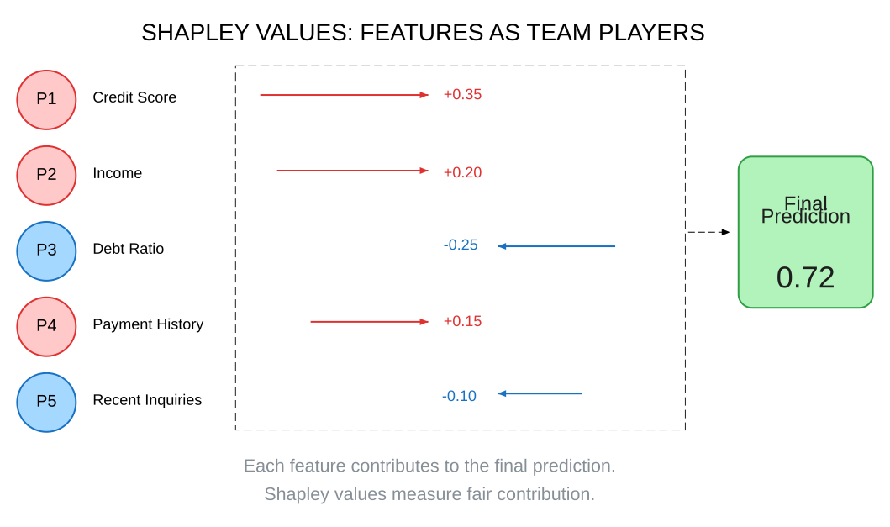
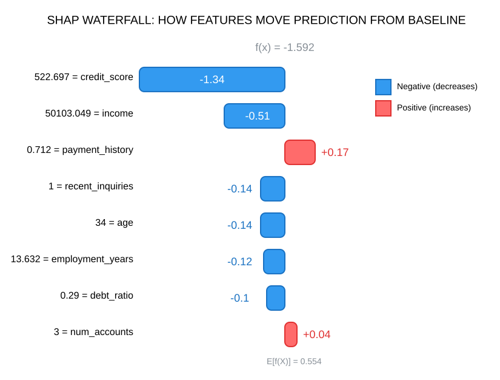
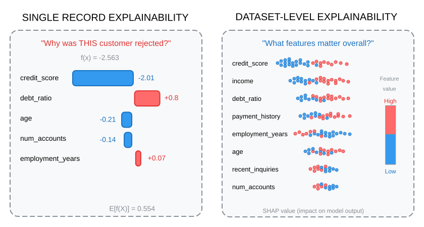

Alessandro Garavaglia | 7 min read | March 2026
Most data scientists use SHAP with the default explainer and never think twice about it. You call shap.Explainer(model), pass in your data, and get those satisfying waterfall plots. It works. But that convenience comes at a cost in compute time.
SHAP has four main explainer types, each optimized for different model architectures. Choosing the wrong one can mean waiting hours instead of seconds. I have seen production systems time out on explanation requests simply because the team used KernelExplainer on a gradient boosting model when TreeExplainer would have been 1000x faster.
Understanding which SHAP explainer to use makes explainability practical in production, whether you are debugging a single prediction or trying to understand your model's overall behavior.
Understanding SHAP and Shapley Values
Before diving into explainer types, it helps to understand where SHAP values come from. The math has elegant foundations in game theory, but you do not need to memorize formulas to use it effectively.
The game theory foundation
Shapley values originated in cooperative game theory, introduced by Lloyd Shapley in 1953 (work that later earned him a Nobel Prize in Economics). The core idea answers a deceptively simple question: when a group of players work together to achieve some outcome, how do we fairly attribute credit to each player?
Here is a useful heuristic: imagine your features as players in a team game. Each player contributes to the final score (your model's prediction). Shapley values answer: "How much did each player fairly contribute to that score?"
To compute this fairly, we consider every possible combination of players and measure how adding each one changes the outcome. If a feature consistently improves predictions across many different combinations, it gets a high Shapley value. If it rarely makes a difference, its value approaches zero.
The beauty of Shapley values is that they guarantee fairness properties: contributions sum to the total, symmetric players get equal credit, and irrelevant players get zero.

From Shapley to SHAP
SHAP (SHapley Additive exPlanations) applies this game theory framework to machine learning model explanations. Scott Lundberg and Su-In Lee introduced it in 2017, and it has since become one of the most widely used explainability methods.
Each feature gets a SHAP value showing how much it pushed the prediction away from a baseline (typically the average prediction across your training data). Positive values mean the feature pushed the prediction higher; negative values mean it pushed lower.
When you see a waterfall plot, you are looking at exactly this: how each feature moved the prediction from baseline to final output.

Two levels of explainability
One thing that often gets overlooked: SHAP operates at two different levels, and knowing which one you need changes how you use it.
Single record level answers questions like "Why did THIS customer get rejected?" You are computing SHAP values for one specific prediction. This is essential for debugging individual cases, explaining decisions to customers, and regulatory compliance where you need to justify specific outcomes.
Whole dataset level answers "What features matter most for my model overall?" Here you aggregate SHAP values across many predictions to reveal global patterns. Summary plots, dependence plots, and feature importance rankings all come from this aggregated view.
In my experience, teams often start with single-record explanations for debugging, then graduate to dataset-level analysis for model monitoring and stakeholder reporting.

The four SHAP explainer types
So why do multiple explainer implementations exist?
The challenge is computational. Computing exact Shapley values requires evaluating 2^n feature combinations, that is completely intractable for models with more than a handful of features. Each explainer type uses model-specific shortcuts to make this practical.
TreeExplainer
If you are working with XGBoost, LightGBM, RandomForest, or CatBoost, TreeExplainer is your first choice. It exploits the tree structure to compute exact SHAP values efficiently, typically in milliseconds even for models with hundreds of features.
The algorithm leverages how tree-based models make predictions through a series of splits. Rather than enumerating all possible feature combinations, it traces paths through the trees to calculate exact contributions.
import shap
import xgboost as xgb
# Train your model
model = xgb.XGBClassifier()
model.fit(X_train, y_train)
# TreeExplainer computes exact SHAP values
explainer = shap.TreeExplainer(model)
shap_values = explainer.shap_values(X_test)KernelExplainer
KernelExplainer is the universal fallback: it works with any model that has a predict function. Custom ensembles, stacked models, models behind an API: if you can call predict, you can use KernelExplainer.
The tradeoff is speed. It uses weighted linear regression on sampled feature coalitions, which means it is approximating rather than computing exactly. For a model with 50 features, you might wait several minutes per prediction.
# Works with ANY model
explainer = shap.KernelExplainer(model.predict, X_train[:100])
shap_values = explainer.shap_values(X_test[:10]) # Subset for speedWhen specialized explainers do not apply, KernelExplainer is your safety net. Just budget extra compute time.
DeepExplainer
For neural networks built with TensorFlow, PyTorch, or Keras, DeepExplainer offers a middle ground. It combines DeepLIFT attribution with Shapley value properties, running faster than KernelExplainer while still handling the complexity of deep learning models.
One requirement: DeepExplainer needs a background dataset as a reference point for computing attributions. Typically you pass a sample of your training data.
# For neural networks
explainer = shap.DeepExplainer(model, X_train[:100])
shap_values = explainer.shap_values(X_test)LinearExplainer
For linear models (LinearRegression, LogisticRegression, Ridge, Lasso), LinearExplainer computes exact SHAP values analytically. It is the fastest of all explainers because the linear structure allows closed-form solutions.
An optional feature: you can account for correlation between features in your data. This matters when your features are not independent, as correlated features can obscure true contributions.
# For linear models - fastest option
explainer = shap.LinearExplainer(model, X_train)
shap_values = explainer.shap_values(X_test)What happens when you choose wrong
I have watched teams abandon explainability entirely because "it is too slow." Often the problem was simply using the wrong explainer.
The performance trap
Here is a scenario I have seen multiple times: a team builds an XGBoost model with 50 features. They use shap.Explainer() which auto-selects, but something goes wrong in the detection and it falls back to KernelExplainer.
Suddenly, generating explanations takes 10+ minutes per prediction instead of milliseconds. Production systems timeout. The explainability feature gets removed because "SHAP does not scale."
The fix would have taken one line: explicitly specify TreeExplainer.
The accuracy trap
Speed is not the only concern. Some explainers compute exact Shapley values; others approximate.
TreeExplainer and LinearExplainer give you exact values for their respective model types. DeepExplainer and KernelExplainer approximate. Using an approximate explainer when an exact one exists means accepting unnecessary error that could lead you to wrong conclusions about feature importance.
The fastest explanation is one that never gets computed because the team gave up waiting. But the most dangerous explanation is one that is computed fast but wrong.
Closing thoughts
SHAP has become a standard tool for model explainability, but the choice of explainer type often gets overlooked. Matching your explainer to your model architecture can mean the difference between milliseconds and minutes, between exact values and approximations.
A few practical takeaways:
- TreeExplainer should be your default for any gradient boosting or random forest model
- KernelExplainer is the universal fallback, but budget compute time accordingly
- Remember both use cases: single predictions for debugging, aggregated views for model understanding
- When in doubt, specify the explainer explicitly rather than relying on auto-detection
If you have production SHAP code, it might be worth checking which explainer is actually running. The fix is usually one line, but the performance improvement can be substantial.
This post is not meant to provide definitive answers or prescriptive guidance. Its goal is to spark reflections and discussions on the topic.
The views expressed are my own.